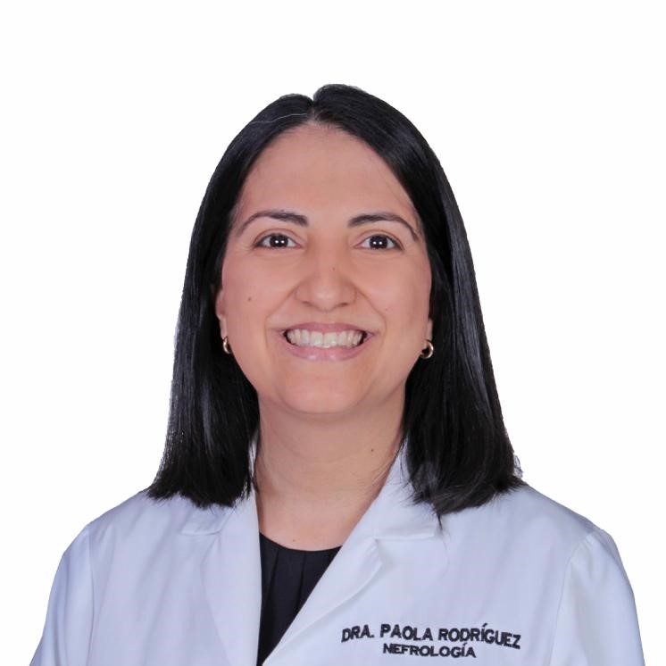

En los medios
Publicaciones y Entrevistas
Conoce más sobre la visión de la Dra. Rodríguez Ramos a través de entrevistas y publicaciones en redes sociales.

Formación académica, especialización y filosofía de atención médica

Sobre mí
Soy Paola Rodríguez Ramos, médico especialista en Nefrología con formación en Costa Rica y perfeccionamiento clínico en uno de los centros hospitalarios más reconocidos de Europa: el Hospital Universitario 12 de Octubre en Madrid, España.
Mi trayectoria me ha permitido adquirir una visión amplia e integral del paciente renal, combinando la rigurosidad científica con un trato humano y cercano. Atiendo en Hospital del Valle, San Pedro Sula, Honduras, donde ofrezco consulta especializada en nefrología.
Mi objetivo es brindar a cada paciente la atención que merece: diagnóstico preciso, tratamiento oportuno y seguimiento personalizado.
Agenda tu ConsultaFormación Académica
Una carrera construida con dedicación, atravesando fronteras para alcanzar la más alta preparación en medicina renal.
Formación médica completa en una de las universidades más prestigiosas de Centroamérica. Adquisición de sólidas bases científicas en ciencias básicas, clínicas y medicina interna, con énfasis en el paciente integral.
Residencia y especialización clínica en Nefrología en el Hospital 12 de Octubre, centro de referencia nacional e internacional en patología renal, trasplante renal y diálisis. Formación en enfermedad renal crónica, glomerulopatías, hipertensión arterial, diálisis peritoneal y hemodiálisis.
Atención de pacientes con patología renal aguda y crónica, hipertensión arterial, trastornos electrolíticos y seguimiento post-trasplante. Compromiso con la educación del paciente y su familia como parte fundamental del tratamiento.
Manejo integral de pacientes hospitalizados con enfermedad renal aguda y crónica, incluyendo lesión renal aguda, síndrome nefrótico y terapias de reemplazo renal. Trabajo multidisciplinario con los servicios de medicina interna, urgencias y cuidados intensivos para garantizar una atención oportuna y de calidad.
Creo que la medicina va más allá del diagnóstico y el tratamiento. Cada paciente merece ser escuchado, comprendido y acompañado. Mi compromiso es ofrecer una atención honesta, basada en evidencia científica y centrada en la persona, no solo en la enfermedad.
En los medios
Conoce más sobre la visión de la Dra. Rodríguez Ramos a través de entrevistas y publicaciones en redes sociales.